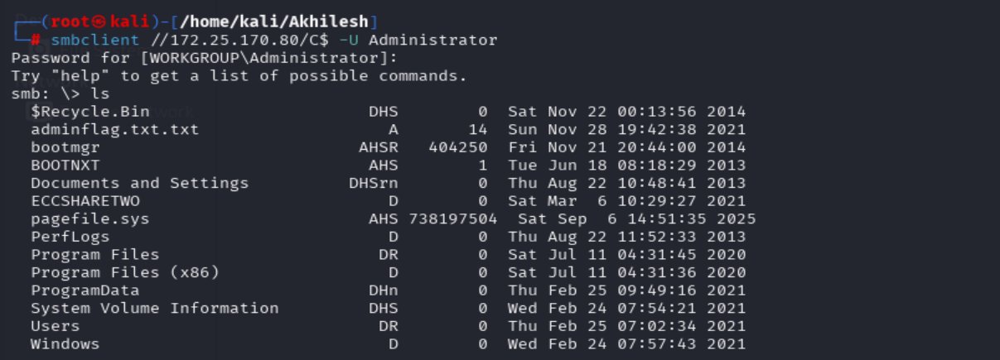

Active Directory Forest Pentest
Published: Sep 9, 2025 • Author: Devaraj Govindhan
1. Executive Summary
This assessment targeted the Active Directory (AD) forest within the 172.25.170.0/24 range, with exclusions at 172.25.170.1. The goal was to identify Domain Controllers, enumerate users, and escalate privileges leveraging Kerberos-based attacks (Silver Ticket, Golden Ticket, Kerberoasting). Ultimately, administrator-level access was achieved and multiple user/admin flags were extracted from key hosts.
2. Scope
- In-Scope: 172.25.170.0/24
- Exclusion: 172.25.170.1
3. Attack Timeline
| Step | Activity |
|---|---|
| Recon | SMB brute force identified valid credentials for cpent:XXX on 172.25.170.110. |
| Discovery | Full subnet scan revealed potential Domain Controllers at 172.25.170.80 and 172.25.170.190. |
| Enumeration | Verified domain login via crackmapexec and extracted AD users with GetADUsers. |
| Password Spray | Pattern-based spraying confirmed that the Administrator account shared the same password. |
| Privilege Escalation | Dumped NTDS.dit via impacket-secretsdump, recovering domain hashes and Kerberos keys. |
| Access | SMB access confirmed with Administrator hash, enabling retrieval of sensitive flags from both DC and member hosts. |
4. Technical Analysis
4.1 Initial Access
Access was achieved through SMB brute forcing against 172.25.170.110, yielding valid credentials for:
Pass: XXX
4.2 Domain Controller Identification
nmap -A 172.25.170.0/24 identified Kerberos (88/tcp) and LDAP (389/tcp) services on the following:
- DC1: 172.25.170.80
- DC2: 172.25.170.190
4.2 Verify Domain Login & User Enumeration
To confirm domain access, LDAP/SMB authentication was tested against the Domain Controller:
crackmapexec smb 172.25.170.80 -u cpent -p 'XXX' --sharesThis step verified that cpent could authenticate against the DC and allowed enumeration of all domain users.
impacket-GetADUsers ECC.LOCALNET/cpent -dc-ip 172.25.170.80 -all4.3 Credential Reuse & Spraying
With one known working password, spraying against AD accounts revealed Administrator reused the same credential.
Pass: XXX
4.4 Secrets Dump
Domain hashes and Kerberos keys were dumped via impacket-secretsdump from DC:
- Administrator NTLM:
52838ab3f0_XXX_080b52043d2cb0f - krbtgt NTLM:
276e4020f8a27_XXX_0636764 - Other users (cpent, Preston, test.user, LPT) had identical hash values.
5. Flags Captured
| Host | Flag | Screenshot |
|---|---|---|
| DC (172.25.170.80) | WS_XXX_-USER |
 |
| 172.25.170.110 (User) | WS_XXX_USER |
|
| 172.25.170.110 (Admin) | ouble_XXX_nFLAGTWO |
 |
6. Lessons Learned
- Password Reuse: Multiple AD accounts (including Administrator) used the same weak password, enabling lateral movement.
- Kerberos Key Exposure: Dumped keys enabled potential Golden/Silver ticket attacks.
- Service Misconfigurations: Remote registry access facilitated
NTDS.ditextraction.
7. Recommendations
- Enforce unique, complex passwords for all AD accounts.
- Enable monitoring/detection for SMB brute-force attempts and password spraying.
- Harden Domain Controllers: restrict remote registry, SMB shares, and enforce least-privilege.
- Rotate and monitor Kerberos tickets, especially
krbtgt, to prevent persistence via Golden Ticket attacks.
8. Conclusion
The engagement successfully demonstrated compromise of both Domain Controllers and member hosts within the AD forest. Weak password practices and lack of monitoring allowed escalation from a low-privileged local user to full domain administrator, enabling sensitive data extraction and persistent access opportunities. Strengthening password policies, reducing service exposure, and improving monitoring would significantly reduce attack surface.